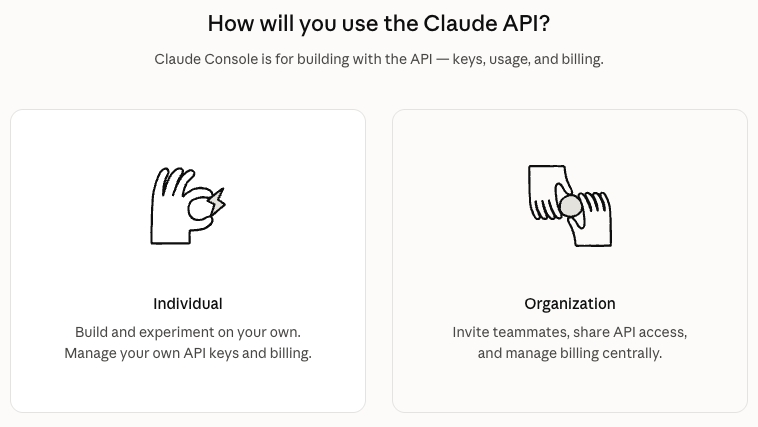
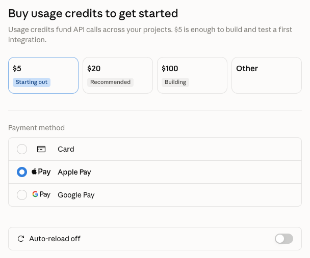
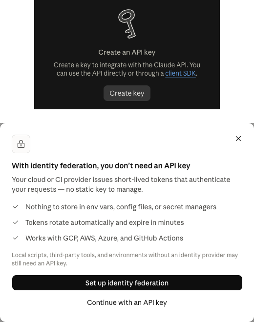
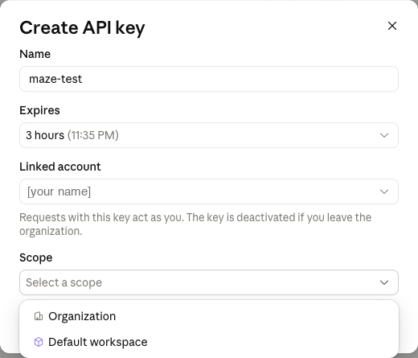
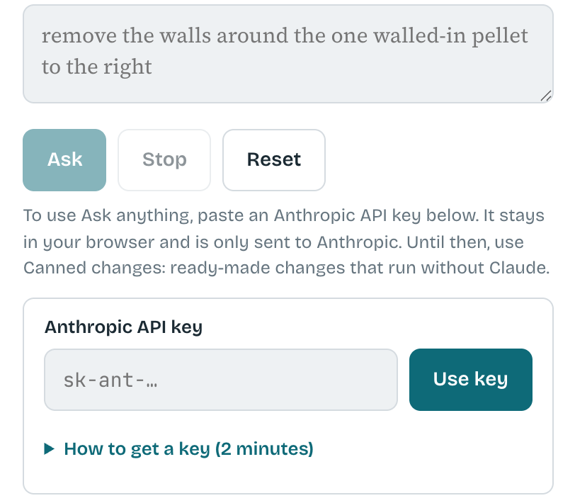

Get an Anthropic API key for the maze
It takes about 2 minutes. The key is your own, and a question in the maze usually costs between 5 and 20 cents on it. Here is every screen you will see, in order.
Made on September 29, 2026; the screenshots were taken that day. Anthropic updates the Console, so the page design or the exact wording may differ slightly from these pictures, but the steps stay the same.
-
Open platform.claude.com/settings/keys and sign in, or create an account. If it asks how you will use the Claude API, choose Individual.

Click the Individual card on the left. -
If it asks you to buy usage credits, the smallest amount of $5 is plenty, or choose Other and type $2-3. Leave Auto-reload off.

$5 is the first button; Other lets you type $2-3 instead. The Auto-reload switch at the bottom stays off. -
Click Create key. If a pop-up offers identity federation, click Continue with an API key.

Top: the Create key button on the API keys page. Bottom: the pop-up; skip the black button and click Continue with an API key under it. -
Give the key any name, set Expires to 3 hours, leave Linked account as it is, set Scope to Default workspace, and click Create key.

The form opens with Expires at 30 days; change it to 3 hours. In the Scope menu pick Default workspace, then click Create key at the bottom of the form. -
Click Copy key and paste it into the game's key box.

Back in the maze, open the Ask anything tab. Paste the key into the Anthropic API key box (it starts with sk-ant-) and press Use key.
The key stays in this tab until you close the tab or press Forget key. The page sends it only to Anthropic. All the code runs on the game's page, so you can read it with your browser's View Source; the same code is published at github.com/marbaji/maze.